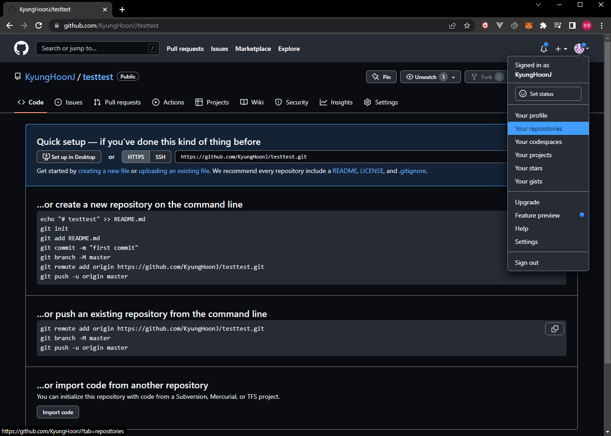
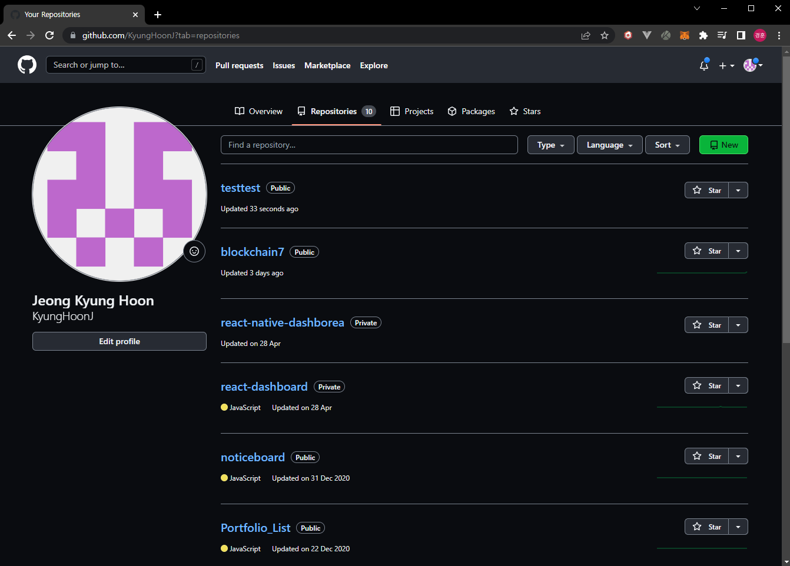
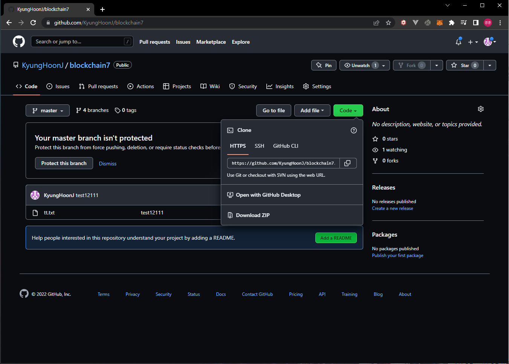

Github 웹페이지이며 로그인 시 이와 비슷하게 노출된다.
왼쪽에 원격
저장소(repositories) 목록을 확인할 수 있다.
처음 접속 시 비어있다.
위 스크린샷의 New 버튼을 클릭하면 원격 저장소 생성 웹페이지로 이동한다.
Repository
name에 원하는 원격 저장소 이름을 입력한다.
Public / Private로 해당
원격 저장소를 다른 유저에게 제한 없이 공유할 것인지 개인적으로 사용하며
원하는 사람만 사용할 수 있도록 할것인지 결정한다.
README 파일을
추가할 수 있다.
.gitignore 파일을 추가할 수 있다. gitignore 파일은
저장소에 저장하지 않을 파일/폴더를 설정한다.
원격 저장소 생성을 완료하면 저장소 웹페이지로 이동한다.
우측 상단의 아이콘을 클릭 시 메뉴를 확인할 수 있으며 원격 저장소 목록 페이지로 이동할 수 있다.
원격 저장소 목록 페이지이다.

저장소 페이지에서 Code 버튼을 클릭 시 공유를 위한 주소를 보거나 저장소를
다운받을 수 있다.
HTTPS 방식을 사용한다.